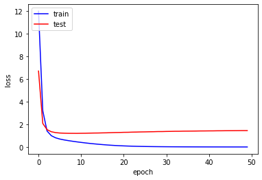

잠재 인수 모델 (Latent Factor Model)
영화나 상품 추천에 사용되는 잠재 인수 모델(Latent Factor Model)을 살펴 보고 Keras로 모델링을 해보자!
실제로 돌려 보고 싶으면 구글 코랩으로 ~

문제 (Problem)
👤 상사
인공지능을 이용해서 영화를 추천하는 프로젝트를 시작한다
데이터는 movielens에서 제공하는 데이터를 사용하게
https://movielens.org/여기서 제공하는 영화 메타데이터와 사용자 별점을 이용해서
영화에 대한 사용자의 별점을 예측하는 프로그램을 만들어 보게
⚙️ 엔지니어
아니 보스… 사진 인식 프로젝트는 어떻게 하라고… CNN시작도 안했는데…
막 지르는 구나…
데이터 수집 (Data Collection)
이제는 데이터 수집도 일이 되었다.
데이터를 다운로드하고 파일로 저장하고 데이터프레임으로 변환하는 작업이 필요하다.
우리가 사용할 무비렌즈 데이터셋은 다음과 같다.
MovieLens Latest Datasets
100,000 ratings and 3,600 tag applications applied to 9,000 movies by 600 users. Last updated 9⁄2018.
- README.txt
- ml-latest-small.zip (size: 1 MB)
- http://files.grouplens.org/datasets/movielens/ml-latest-small.zip
Zip파일을 풀면 아래의 데이터가 나온다. (README.txt 참조)
ratings.csv
- 파일 형식: userId, movieId, rating, timestamp
- userId: 1 ~ 610 사이의 정수값
- movieId: 1 ~ 193609 사이의 정수값
- rating: 0.5 ~ 5.0 사이의 별점값 (0.5씩 증가)
- timestamp: 별점을 준 시간을 초로 표시 (1970.01.01 부터 UTC time)
movies.csv
- 파일 형식: movieId, title, genres
- movieId: 1 ~ 193609 사이의 정수값
- title: 영화 제목
- genres: 하나 이상의 장르가 ‘|’ 로 연결되어 표시
Action, Adventure, Animation, Children’s, Comedy, Comedy, Documentary, Drama, Fantasy, Film-Noir, Horror, Musical, Mystery, Romance, Sci-Fi, Thriller, War, Western
데이터를 다운로드 하고 /tmp/movielens-data/ 에 저장하자
import sys
import time
import os
import tempfile
import zipfile
from six.moves import urllib
import tensorflow as tf
def _progresshook(count, block_size, total_size):
global start_time
if count == 0:
start_time = time.time()
return
duration = time.time() - start_time
progress_size = int(count * block_size)
speed = int(progress_size / (1024 * duration))
percent = int(count * block_size * 100 / total_size)
sys.stdout.write("\r...%d%%, %d MB, %d KB/s, %d seconds passed" %
(percent, progress_size / (1024 * 1024), speed, duration))
sys.stdout.flush()
DATA_DIR = "/tmp/movielens-data/"
DATA_SET = 'ml-latest-small'
RATINGS_FILE = "ratings.csv"
MOVIES_FILE = "movies.csv"
DATA_URL = "http://files.grouplens.org/datasets/movielens/"
data_subdir = os.path.join(DATA_DIR, DATA_SET)
expected_files = ["{}.zip".format(DATA_SET), RATINGS_FILE, MOVIES_FILE]
tf.io.gfile.makedirs(data_subdir)
if set(expected_files).intersection(
tf.io.gfile.listdir(data_subdir)) == set(expected_files):
print("Dataset {} has already been downloaded".format(DATA_SET))
else:
tf.io.gfile.makedirs(data_subdir)
url = "{}{}.zip".format(DATA_URL, DATA_SET)
temp_dir = tempfile.mkdtemp()
try:
zip_path = os.path.join(temp_dir, "{}.zip".format(DATA_SET))
zip_path, _ = urllib.request.urlretrieve(url, zip_path, _progresshook)
statinfo = os.stat(zip_path)
print()
print("Successfully downloaded {} {} bytes".format(zip_path, statinfo.st_size))
zipfile.ZipFile(zip_path, "r").extractall(temp_dir)
working_dir = os.path.join(temp_dir, DATA_SET)
tf.io.gfile.copy(os.path.join(working_dir, "ratings.csv"), os.path.join(temp_dir, RATINGS_FILE))
tf.io.gfile.copy(os.path.join(working_dir, "movies.csv"), os.path.join(temp_dir, MOVIES_FILE))
tf.io.gfile.rmtree(working_dir)
for fname in tf.io.gfile.listdir(temp_dir):
if not tf.io.gfile.exists(os.path.join(data_subdir, fname)):
tf.io.gfile.copy(os.path.join(temp_dir, fname),
os.path.join(data_subdir, fname))
else:
print("Skipping copy of {}, as it already exists in the "
"destination folder.".format(fname))
finally:
tf.io.gfile.rmtree(temp_dir)
...100%, 0 MB, 782 KB/s, 1 seconds passed
Successfully downloaded /tmp/tmpgpeoa1q0/ml-latest-small.zip 978202 bytes
Ratings 데이터프레임
import pandas as pd
import numpy as np
ratings_df = pd.read_csv(os.path.join(data_subdir, RATINGS_FILE))
ratings_df.head()
| userId | movieId | rating | timestamp | |
|---|---|---|---|---|
| 0 | 1 | 1 | 4.0 | 964982703 |
| 1 | 1 | 3 | 4.0 | 964981247 |
| 2 | 1 | 6 | 4.0 | 964982224 |
| 3 | 1 | 47 | 5.0 | 964983815 |
| 4 | 1 | 50 | 5.0 | 964982931 |
Movies 데이터프레임
movies_df = pd.read_csv(os.path.join(data_subdir, MOVIES_FILE))
movies_df.head()
| movieId | title | genres | |
|---|---|---|---|
| 0 | 1 | Toy Story (1995) | Adventure|Animation|Children|Comedy|Fantasy |
| 1 | 2 | Jumanji (1995) | Adventure|Children|Fantasy |
| 2 | 3 | Grumpier Old Men (1995) | Comedy|Romance |
| 3 | 4 | Waiting to Exhale (1995) | Comedy|Drama|Romance |
| 4 | 5 | Father of the Bride Part II (1995) | Comedy |
#번 사용자가 5개 별점을 준 영화 리스트
userId = 100 # 1~610
rating = 5 # 1 ~ 5
top_movie_ids = ratings_df[(ratings_df['userId'] == userId)
& (ratings_df['rating'] == rating)].movieId
top_titles = movies_df[movies_df['movieId'].isin(top_movie_ids)].title
print('Top rated titles of userId {}:\n'.format(userId))
for item in top_titles:
print(item)
Top rated titles of userId 100:
Top Gun (1986)
Terms of Endearment (1983)
Christmas Vacation (National Lampoon's Christmas Vacation) (1989)
Officer and a Gentleman, An (1982)
Sweet Home Alabama (2002)
데이터 분석 (Data Analysis)
데이터 확인 (Data Visualization)
print('{} Ratings, {} Users, {} Movies'.format(len(ratings_df),
len(ratings_df.userId.unique()),
len(ratings_df.movieId.unique())))
100836 Ratings, 610 Users, 9724 Movies
데이터가 구멍이 난 것이 없는지 확인
# Check missing data
print('missing number of userId data is ', ratings_df['userId'].isnull().sum())
print('missing number of movieId data is ', ratings_df['movieId'].isnull().sum())
print('missing number of rating data is ', ratings_df['rating'].isnull().sum())
missing number of userId data is 0
missing number of movieId data is 0
missing number of rating data is 0
userId, movieId, rating 세개만 가지고 피처 벡터(feature vector)를 추출할 예정이다.
일단 userId를 컬럼(Column), movieId를 열(Row)로 만들어서 rating값을 확인해 보자
df_table = ratings_df.set_index(["movieId", "userId"]).unstack()
df_table.shape
(9724, 1220)
df_table.iloc[808:817, 212:222].fillna("")
| rating | ||||||||||
|---|---|---|---|---|---|---|---|---|---|---|
| userId | 213 | 214 | 215 | 216 | 217 | 218 | 219 | 220 | 221 | 222 |
| movieId | ||||||||||
| 1057 | ||||||||||
| 1059 | 4 | 2 | ||||||||
| 1060 | ||||||||||
| 1061 | 3.5 | 3 | ||||||||
| 1064 | ||||||||||
| 1066 | ||||||||||
| 1068 | ||||||||||
| 1073 | 3 | 3 | 2.5 | |||||||
| 1077 | 3 | 2 | 4 | |||||||
⚙️ 엔지니어
빵꾸가 많이 보인다…
별점이 비어 있는 빵꾸난 부분을
우리가 만들 모델을 통해서
별점을 예측해서 채워 넣어야 한다.어떻게?
데이터 모델링 (Data Modeling)
데이터가 크고 불완전하면 이해하기도 어렵고 다루기도 어렵다.
미니 데이터를 만들어서 솔루션을 찾아보자!
5편의 영화에 대해서 4명이 별점을 매긴 데이터가 있다.
| 영화 \ 평가자 | Alice | Bob | Carol | Dave |
|---|---|---|---|---|
| 뷰티인사이드 | 5 | 5 | 1 | 1 |
| 라라랜드 | 5 | 4 | 1 | 1 |
| 러브스토리 | 5 | 5 | 1 | 1 |
| 매트릭스 | 1 | 1 | 5 | 5 |
| 스타워즈 | 1 | 1 | 5 | 4 |
우리는 여기서 앨리스(Alice), 밥(Bob), 캐롤(Carol), 데이브(Dave)를 분류할 수 있는 특징과 뷰티 인사이드, 라라랜드, 러브 스토리, 매트릭스, 스타워즈를 분류 할 수 있는 특징을 발견할 것이다.
우선 영화를 보자
뷰티 인사이드, 라라랜드, 러브 스토리는 ‘로맨틱 영화’로 분류할 수 있고,
매트릭스와 스타워즈는 ‘공상과학 영화’로 분류할 수 있다.
| 영화 \ 특징 | 로맨틱 영화 | 공상과학 영화 |
|---|---|---|
| 뷰티인사이드 | 높은 점수 | 낮은 점수 |
| 라라랜드 | 높은 점수 | 낮은 점수 |
| 러브스토리 | 높은 점수 | 낮은 점수 |
| 매트릭스 | 낮은 점수 | 높은 점수 |
| 스타워즈 | 낮은 점수 | 높은 점수 |
사용자를 보자
앨리스와 밥은 로맨틱 영화를 좋아하고 공상과학 영화를 좋아하지 않는 ‘로맨틱한 사람’으로 분류할 수 있고,
캐롤과 데이브는 공상과학 영화를 좋아하고 로맨틱 영화를 좋아하지 않는 ‘상상력이 풍부한 사람’으로 분류할 수 있다.
| 특징 \ 평가자 | Alice | Bob | Carol | Dave |
|---|---|---|---|---|
| 로맨틱한 사람 | 높은 점수 | 높은 점수 | 낮은 점수 | 낮은 점수 |
| 상상력이 풍부한 사람 | 낮은 점수 | 낮은 점수 | 높은 점수 | 높은 점수 |
잠재 인수(Latent factor)
‘로맨틱 영화’, ‘상상력이 풍부한 사람’과 같은 피처(feature)는 데이터에서는 보이지 않는다.
이와같이 데이터들 속에 숨어있는 특징을 잠재 인수(Latent factor) 라고 한다.
⚙️ 엔지니어
잠재 인수(Latent factor)의 값들이
영화의 특징을 보여주고
평가자의 특징을 보여 주면서
별점수까지 보여 주는 방법이 없을까?있다! 그것은 바로…
행렬 인수 분해 (Matrix Factorization)
별점 매트릭스를 \(R\)라고 하자
\(R= \begin{bmatrix} 5 & 5 & 1 & 1 \\ 5 & 4 & 1 & 1 \\ 5 & 5 & 1 & 1 \\ 1 & 1 & 5 & 5 \\ 1 & 1 & 5 & 4 \end{bmatrix}\)
우리는 이제 \(R\) (5X4) 매트릭스를 \(Q\) (5X2)와 \(P^T\) (2X4) 매트릭스로 분해를 할 것이다.
# Non-negative matrix factorization
from sklearn.decomposition import NMF
R = [
[5,5,1,1],
[5,4,1,1],
[5,5,1,1],
[1,1,5,5],
[1,1,5,4],
]
k = 2 # number of factors
model = NMF(n_components=k)
Q = model.fit_transform(np.array(R))
P = model.components_
아래 \(Q\) 매트릭스를 보자.
0번 컬럼(Column)을 ‘로맨틱 영화’,
1번 컬럼(Column)을 ‘공상과학 영화’ 라고 하면
\(Q\) 매트릭스는 영화의 특징을 나타내고 있다.
# Q (5X2) 매트릭스
pd.DataFrame(Q, columns=['Romantic', 'Sci-Fi'])
| Romantic | Sci-Fi | |
|---|---|---|
| 0 | 1.931132 | 0.000002 |
| 1 | 1.744253 | 0.047301 |
| 2 | 1.931132 | 0.000002 |
| 3 | 0.376532 | 2.425963 |
| 4 | 0.375488 | 2.186905 |
아래 \(P^T\) 매트릭스를 보자.
0번 열(Row)을 ‘로맨틱한 사람’,
1번 열(Row)을 ‘상상력이 풍부한 사람’ 이라고 하면
\(P^T\) 매트릭스는 평가자의 특징을 나타내고 있다.
# P (2X4) 매트릭스
pd.DataFrame(P, index=['Romantic Guy', 'Imaginary Guy'])
| 0 | 1 | 2 | 3 | |
|---|---|---|---|---|
| Romantic Guy | 2.669263 | 2.503536 | 0.518479 | 0.518187 |
| Imaginary Guy | 0.000000 | 0.023698 | 2.077725 | 1.872818 |
마지막으로 \(Q\)와 \(P^T\) 매트릭스가
별점을 표현하는 지를 확인하기 위해서
\(Q\)와 \(P^T\)를 곱해 보자
R_hat = np.dot(Q,P)
pd.DataFrame(R_hat)
| 0 | 1 | 2 | 3 | |
|---|---|---|---|---|
| 0 | 5.154699 | 4.834659 | 1.001255 | 1.000692 |
| 1 | 4.655871 | 4.367922 | 1.002637 | 0.992436 |
| 2 | 5.154699 | 4.834659 | 1.001255 | 1.000692 |
| 3 | 1.005062 | 1.000152 | 5.235708 | 4.738501 |
| 4 | 1.002276 | 0.991874 | 4.738469 | 4.290248 |
\(R\)과 근사한 값이 나온다.
이렇게 \(R \simeq Q \cdot P^T\) 를 행렬인수분해(Matrix Factorization) 라고 한다.
⚙️ 엔지니어
놀랍다!
평가자들의 영화 평점 매트릭스만 가지고
평가자들의 잠재 인수(latent factor)와
영화의 잠재 인수(latent factor)를
추출할 수 있다.여러분… 수학이 이렇게 신기하고
재미있습니다.학생때
열심히 할걸…그러나
별점이 빵꾸난 데이터에 대해서
잠재 인수(Latent factor)를 어떻게 찾을까?
잠재 인수 모델 (Latent factor model)
알고 있는 데이터세트(\(X, Y\))를 학습하여 새로운 입력값(\(X_{new}\))에 대해 출력값(\(\hat Y\))을 예측하는 모델이 선형 회귀 모델이다. 잠재 인수 모델도 선형 회귀 모델과 비슷하게 손실함수를 정의하고 손실함수가 최소가 되는 \(P\)와 \(Q\)를 찾는 모델이다.
손실함수(Loss function)
잠재 인수 모델(Latent factor model)에서의 손실 함수(Loss function)는 SSE(Sum of Squared Error) 를 사용한다.
\(J(p, q) = {1 \over 2}\sum_{(i,j) \in R} (r_{ij} - q_i \cdot p_{j}^T)^2\)
여기에 과대적합(Overfitting)을 방지하기 위해서 L2 Regularization 을 추가한다.
\(J(p, q) = {1 \over 2}\sum_{(i,j) \in R} (r_{ij} - q_i \cdot p_{j}^T)^2 + {1 \over 2}\lambda \sum_{i} ||q_i||^2 + {1 \over 2}\lambda \sum_{j} ||p_j||^2\)
최적화(Optimization)
손실함수의 최소값을 찾기 위해서 경사 하강법(Gradient Descent) 을 적용한다.
REPEAT(epoch) {
\(p:=p-\alpha {\partial {J(p,q)}\over \partial p}\)
\(q:=q-\alpha {\partial{J(p,q)}\over \partial q}\) , \(\alpha\): learining rate
}
⚙️ 엔지니어
이제 미니 데이터를 가지고 모델링을 해보자!
import pandas as pd
import numpy as np
data = [
['Alice', 'Beauty Inside', 5],
['Alice', 'La La Land', 5],
['Alice', 'Love Story', 5],
['Alice', 'Matrix', 1],
['Alice', 'Star Wars', 1],
['Bob', 'La La Land', 4],
['Bob', 'Love Story', 5],
['Bob', 'Matrix', 1],
['Bob', 'Star Wars', 1],
['Carol', 'Beauty Inside', 1],
['Carol', 'La La Land', 1],
['Carol', 'Matrix', 5],
['Carol', 'Star Wars', 5],
['Dave', 'Beauty Inside', 1],
['Dave', 'La La Land', 1],
['Dave', 'Love Story', 1],
['Dave', 'Matrix', 5],
['Dave', 'Star Wars', 4],
]
mini_df = pd.DataFrame( data = data, columns = ['user', 'item', 'rating'])
df_table = mini_df.set_index(["item", "user"]).unstack().fillna('?')
df_table
| rating | ||||
|---|---|---|---|---|
| user | Alice | Bob | Carol | Dave |
| item | ||||
| Beauty Inside | 5.0 | ? | 1 | 1.0 |
| La La Land | 5.0 | 4 | 1 | 1.0 |
| Love Story | 5.0 | 5 | ? | 1.0 |
| Matrix | 1.0 | 1 | 5 | 5.0 |
| Star Wars | 1.0 | 1 | 5 | 4.0 |
데이터 변환 (Data Transformation)
잠재 인수 모델(Latent factor model)에서 데이터 훈련을 위한 입력 값은 ‘평가자’와 ‘영화’의 인덱스 값, 그리고 별점이다.
미니 데이터로 예를 들면 ‘라라랜드’를 평가한 ‘Alice’의 평점이 ‘5.0’ 이므로 모델에 입력하는 값은 다음과 같다.
- 라라랜드를 인덱싱한 값: 1
- 앨리스를 인덱싱한 값: 0
- 별점 5.0
따라서 영화 리스트와 평가자 리스트를 겹치지 않게 인덱싱 값으로 변환해야 한다.
다음은 미니 데이터에서 평가자(user)를 인덱싱한 결과이다.
앨리스는 0, 밥은 1, 캐럴은 2, 데이브는 3으로 변환된 것을 확인할 수 있다.
mini_df.user = mini_df.user.astype('category').cat.codes.values
df_table = mini_df.set_index(["item", "user"]).unstack().fillna('?')
df_table
| rating | ||||
|---|---|---|---|---|
| user | 0 | 1 | 2 | 3 |
| item | ||||
| Beauty Inside | 5.0 | ? | 1 | 1.0 |
| La La Land | 5.0 | 4 | 1 | 1.0 |
| Love Story | 5.0 | 5 | ? | 1.0 |
| Matrix | 1.0 | 1 | 5 | 5.0 |
| Star Wars | 1.0 | 1 | 5 | 4.0 |
영화(item)의 경우도 인덱싱을 한다.
뷰티인사이드가 0, 라라랜드가 1, 러브스토리가 2, 매트릭스가 3, 스타워즈 4로 변환된 것을 확인 할 수 있다.
mini_df.item = mini_df.item.astype('category').cat.codes.values
df_table = mini_df.set_index(["item", "user"]).unstack().fillna('?')
df_table
| rating | ||||
|---|---|---|---|---|
| user | 0 | 1 | 2 | 3 |
| item | ||||
| 0 | 5.0 | ? | 1 | 1.0 |
| 1 | 5.0 | 4 | 1 | 1.0 |
| 2 | 5.0 | 5 | ? | 1.0 |
| 3 | 1.0 | 1 | 5 | 5.0 |
| 4 | 1.0 | 1 | 5 | 4.0 |
모델링 (Modeling)
잠재 인수 모델에서 필요한 Embedding에 대해서 알아보자.
Embedding
임베딩(Embedding)은 잠재 인수 (Latent factor)를 생성한다.
영화(item)의 잠재 인수와 잠재 벡터는 아래와 같이 생성한다.
from tensorflow.keras import Model
from tensorflow.keras.layers import Input, Embedding, Flatten, dot
from tensorflow.keras import regularizers
n_items = len(mini_df.item.unique()) # 5편의 영화
n_items_latent_factors = 2 # 영화의 잠재 인수 개수
item_input = Input(shape=[1])
# Item latent factor
item_embedding = Embedding(n_items, n_items_latent_factors, # (5X2) Latent factor
name='item_embedding')(item_input)
# Item latent vector
item_vec = Flatten()(item_embedding)
WARNING: Logging before flag parsing goes to stderr.
W0906 18:42:21.169342 140660089382720 deprecation.py:506] From /home/dataman/anaconda3/lib/python3.7/site-packages/tensorflow/python/keras/initializers.py:119: calling RandomUniform.__init__ (from tensorflow.python.ops.init_ops) with dtype is deprecated and will be removed in a future version.
Instructions for updating:
Call initializer instance with the dtype argument instead of passing it to the constructor
평가자(user)의 잠재 인수와 잠재 벡터를 생성한다.
n_users = len(mini_df.user.unique()) # 4명의 평가자
n_users_latent_factors = 2 # 평가자의 잠재 인수 개수
user_input = Input(shape=[1])
# User latent factor
user_embedding = Embedding(n_users, n_users_latent_factors, # (4X2) Latent factor
name='user_embedding')(user_input)
# User latent vector
user_vec = Flatten()(user_embedding)
미니 데이터를 가지고 Modeling
\(\hat R = Q \cdot P^T\)
r_hat = dot([item_vec, user_vec], axes=-1)
mini_model = Model([user_input, item_input], r_hat)
mini_model.compile(optimizer = 'sgd', loss = 'mean_squared_error')
모델 훈련
hist = mini_model.fit([mini_df.user, mini_df.item], mini_df.rating, epochs=2000, verbose=0)
print('loss: ', hist.history['loss'][-1])
%matplotlib inline
import matplotlib.pyplot as plt
plt.plot(hist.history['loss'])
plt.xlabel('epoch')
plt.ylabel('loss')
plt.show()
loss: 0.03074105642735958

예측
이제 빵꾸난 별점을 예측해 보자
Q = mini_model.get_layer(name='item_embedding').get_weights()[0]
P = mini_model.get_layer(name='user_embedding').get_weights()[0]
P_t = np.transpose(P)
R_hat = np.dot(Q, P_t)
pd.DataFrame(R_hat)
| 0 | 1 | 2 | 3 | |
|---|---|---|---|---|
| 0 | 4.999927 | 4.525294 | 1.004016 | 0.994853 |
| 1 | 4.739066 | 4.290169 | 1.003192 | 0.989438 |
| 2 | 5.235585 | 4.737882 | 1.014246 | 1.008297 |
| 3 | 1.002523 | 1.002334 | 5.235493 | 4.738781 |
| 4 | 1.001823 | 0.992321 | 4.738204 | 4.290364 |
print('뷰티 인사이드에 대한 Bob의 예상 별점은 {:.1f}'.format(R_hat[0][1]))
print('러브 스토리에 대한 Carol의 예상 별점은 {:.1f} 이다.'.format(R_hat[2][2]))
뷰티 인사이드에 대한 Bob의 예상 별점은 4.5
러브 스토리에 대한 Carol의 예상 별점은 1.0 이다.
⚙️ 엔지니어
우리가 예상한 별점과 가깝게 예측을 하고 있다!
이제 Movielens의 별점 정보를 가지고 모델링을 하자
Movielens를 가지고 모델링(Modeling)하기
데이터 변환
훈련 데이터는 ratings_df에서 랜덤하게 80%를 선택하고,
테스트 데이터는 나머지 20%를 랜덤하게 선택한다.
movielens_df = ratings_df.copy()
# Indexing userId and movieId
users = movielens_df.userId.unique()
movies = movielens_df.movieId.unique()
userid2idx = {o:i for i,o in enumerate(users)}
movieid2idx = {o:i for i,o in enumerate(movies)}
movielens_df['userId'] = movielens_df['userId'].apply(lambda x: userid2idx[x])
movielens_df['movieId'] = movielens_df['movieId'].apply(lambda x: movieid2idx[x])
# Split train and test data
split = np.random.rand(len(movielens_df)) < 0.8
train_df = movielens_df[split]
test_df = movielens_df[~split]
print('shape of train data is ',train_df.shape)
print('shape of test data is ',test_df.shape)
shape of train data is (80863, 4)
shape of test data is (19973, 4)
Latent factor 모델링
n_movies = len(movielens_df.movieId.unique())
n_users = len(movielens_df.userId.unique())
n_latent_factors = 64
movie_input = Input(shape=[1])
# Item latent factor
movie_embedding = Embedding(n_movies, n_latent_factors,
name='movie_embedding')(movie_input)
# Item latent vector
movie_vec = Flatten()(movie_embedding)
user_input = Input(shape=[1])
# User latent factor
user_embedding = Embedding(n_users, n_latent_factors,
name='user_embedding')(user_input)
# User latent vector
user_vec = Flatten()(user_embedding)
r_hat = dot([movie_vec, user_vec], axes=-1)
model = Model([user_input, movie_input], r_hat)
model.compile(optimizer = 'adam', loss = 'mean_squared_error')
모델 훈련 및 평가
⚙️ 엔지니어
돌려놓고 커피 한잔 하세여~
hist = model.fit([train_df.userId, train_df.movieId], train_df.rating,
batch_size=128, epochs=50, verbose=0,
validation_data = ([test_df.userId, test_df.movieId],test_df.rating))
print('train loss: ', hist.history['loss'][-1])
print('test loss: ', hist.history['val_loss'][-1])
%matplotlib inline
import matplotlib.pyplot as plt
plt.plot(hist.history['loss'], 'b')
plt.plot(hist.history['val_loss'] , 'r')
plt.xlabel('epoch')
plt.ylabel('loss')
plt.legend(['train', 'test'], loc='upper left')
plt.show()
train loss: 0.015583596717465682
test loss: 1.4580945893663293

⚙️ 엔지니어
음…
개선 사항이 보이지만
오늘은 여기까지 하자
해결 (Solution)
⚙️ 엔지니어
보스~ 원하시는 솔루션입니다.
userId, movieId 값을 입력하시면
예상되는 별점값이 출력 됩니다.
userId = 214 # 1 ~ 610
movieId = 1059 # 1 ~ 193609
movie_title = list(movies_df[movies_df['movieId']==movieId].title)[0]
user_v = np.expand_dims(userid2idx[userId], 0)
movie_v = np.expand_dims(movieid2idx[movieId], 0)
predict = model.predict([user_v, movie_v])
print('영화 {} 에 대한 사용자 ID {}님의 예상 별점은 {:.1f} 입니다.'.format(movie_title, userId, predict[0][0]))
영화 William Shakespeare's Romeo + Juliet (1996) 에 대한 사용자 ID 214님의 예상 별점은 4.0 입니다.